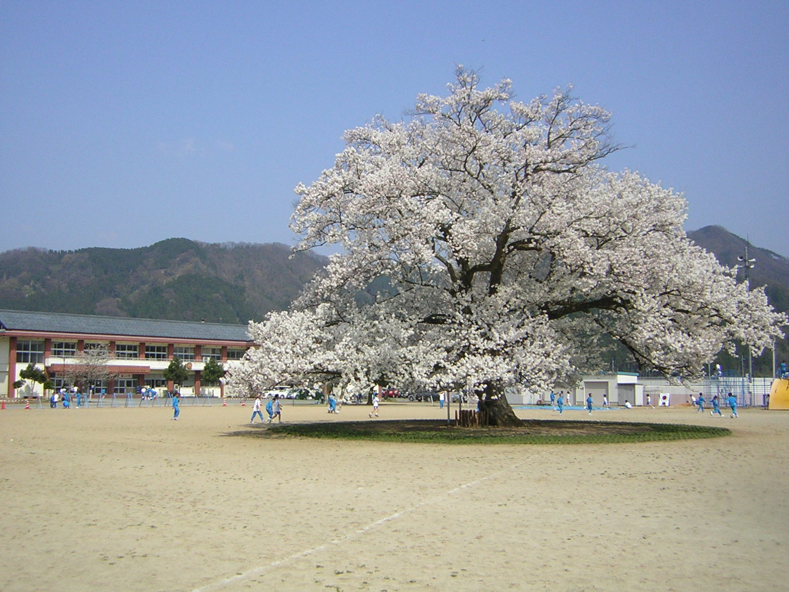
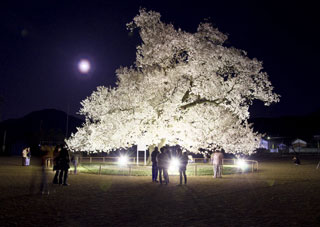

ひ ： 広い校庭に咲き誇る 大きな味真野 一本桜
一言でいうと？
味真野小学校の校庭の真ん中に咲く大きな桜の木

味真野小学校の校庭の真ん中にある一本桜。
1978年、越前市の天然記念物に指定されており、推定樹齢140歳を超える大木だそうです。
県内外から観光客が訪れる桜の名所です。
どのくらい大きいの？
高さは14メートル
桜の高さは約14メートルで、根の周りは4メートル20センチです。
桜の種類はエドヒガンです。
どうして校庭の真ん中に？
校庭を広くしたから！
最初は校舎の横に植えられましたが、1978年、旧校舎を取り壊して新校舎を建てるときに校庭を広くしたため、桜が校舎の真ん中にきました。
その時に、「桜を移動させてはどうか」という声もありましたが、当時の校長先生が、そのままの位置で残すことを決めました。
見ごろはいつ？
4月いっぱい
桜の見ごろは4月上旬～4月下旬。
昼でももちろん楽しめますが、夜にはライトアップがされて夜桜を楽しむことができます。

校庭の真ん中に桜があるなんてびっくりですが、絵本のようで素敵ですよね！普段の学校生活が気になります…。小さい頃はよく遊びに行って桜の木の下で写真を撮りました！見学は自由ですが小学校の敷地内なので学校の迷惑にならないように気を付けて下さいね。